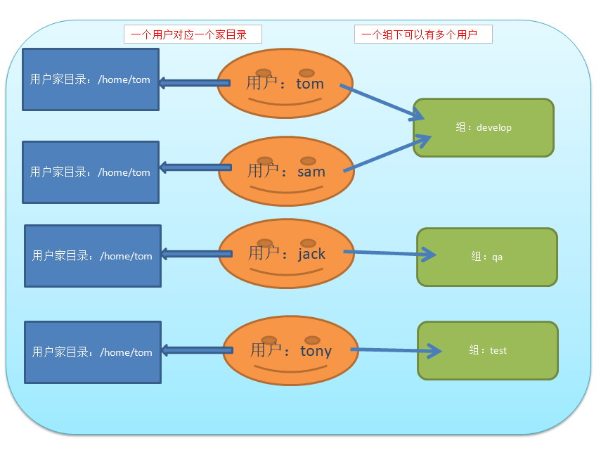
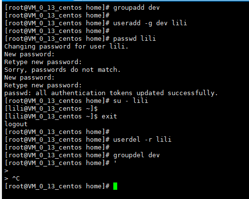
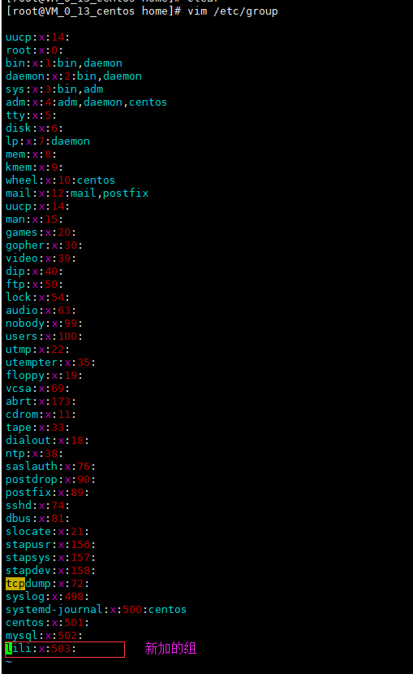
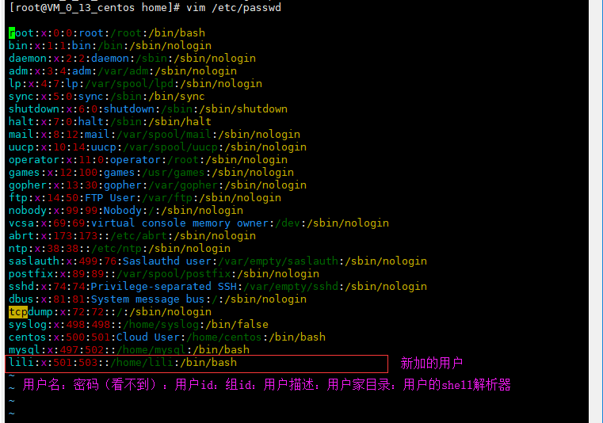
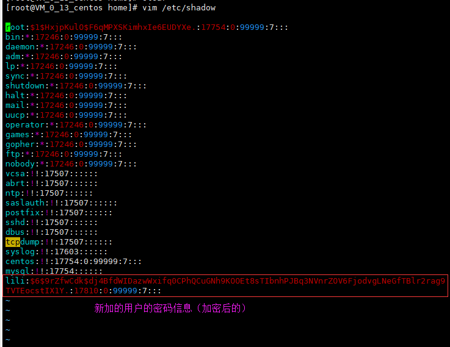

用户、组、用户家目录的对应关系

组的相关操作
添加组：groupadd 组名
删除组：groupdel 组名
用户的相关操作
添加用户（如果没有指定用户从属于哪个组，则默认新建一个以用户名为组名的组，并将用户添加到这个组下面），默认会在/home目录下添加以用户名为目录名的用户家目录：useradd 用户名
添加用户（如果没有指定用户从属于哪个组，则默认新建一个以用户名为组名的组，并将用户添加到这个组下面），并指定用户的家目录位置：useradd -d 指定的用户家目录 用户名
添加用户，并指定用户属于哪个组：useradd -g 组名 用户名
为用户设置密码：passwd 用户名，然后输入密码
删除用户（不删除用户家目录）：userdel 用户名
删除用户并删除用户家目录：userdel -r 用户名
查看用户信息：id 用户名，如果用户不存在的话则提示用户不存在
切换用户：su - 用户名

用户管理相关配置文件
组配置文件：/etc/group

用户信息配置文件：/etc/passwd

用户密码配置文件：/etc/shadow
